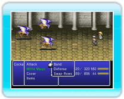
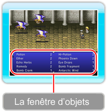
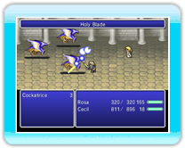
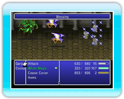

21 |
Commandes |
 |
|

Certaines commandes de combat sont communes à tous les personnages, tandis que d’autres (appelées « compétences ») sont spécifiques à certains membres de l’équipe. Cette section détaille les commandes les plus répandues ainsi qu’un certain nombre de compétences.
● Attaque (commande commune)Exécutez une attaque physique avec l’arme dont le personnage est équipé. Vous devrez choisir la cible de votre attaque.

● Objets(commande commune) Utilisez un objet de l’inventaire. Sélectionnez un objet puis sa cible.

Changer d’équipementSi vous appuyez sur haut de la ● Coopération (commande commune)Exécutez une Coopération déjà apprise ou essayez d’en apprendre une nouvelle.
Définition des CoopérationsUne Coopération est une attaque réalisée de concert par plusieurs personnages. Vous pouvez apprendre de nouvelles Coopérations tout au long de l’histoire. Vous pouvez également en apprendre certaines en les cherchant au cours des combats.
Recherche de CoopérationsPour chercher une nouvelle Coopération, sélectionnez la commande « Coopération » puis « Rechercher Coopérations ». Vous devrez alors choisir les personnages à rassembler et la commande de combat à utiliser pour chaque membre de la Coopération. Après avoir choisi les commandes de tous les personnages concernés, appuyez sur

Utiliser uneCoopérationUne fois une Coopération apprise, il vous suffit pour l’exécuter de la sélectionner dans le menu. Les Coopérations coûtent des PM à tous les personnages concernés.
● Défense (commande commune)Vous pouvez vous protéger et réduire les dégâts que vous infligent les attaques ennemies. ● Position (commande commune)Cette commande change le rang de tous les personnages, d’avant en arrière ou d’arrière en avant. Comme le choix du rang peut réduire les dégâts infligés par l’ennemi (→ P. 13), il est conseillé de sélectionner rapidement Position lorsque vous êtes attaqué dans le dos (une attaque surprise).
● Magie blanche (compétence)Jetez le sort de magie blanche disponible de votre choix (→ P. 23). ● Magie noire (Compétence)Jetez le sort de magie noire disponible de votre choix (→ P. 23). 
● Éveil(Céodore uniquement) Ceci régénère tous vos PV et vous procure un bonus de statistiques pendant un moment. Ces effets finissent par disparaître après un certain nombre d’actions : vos PV seront alors réduits à quelques unités. 
● Couvrir(Cécil uniquement) Ceci vous permet de recevoir des dégâts physiques à la place d’un autre personnage de l’équipe.

● Prière(Rosa uniquement) Ceci redonne quelques PV et PM à tous les personnages de l’équipe. Attention : il arrive que rien ne se passe.
|


 |
 |
 |